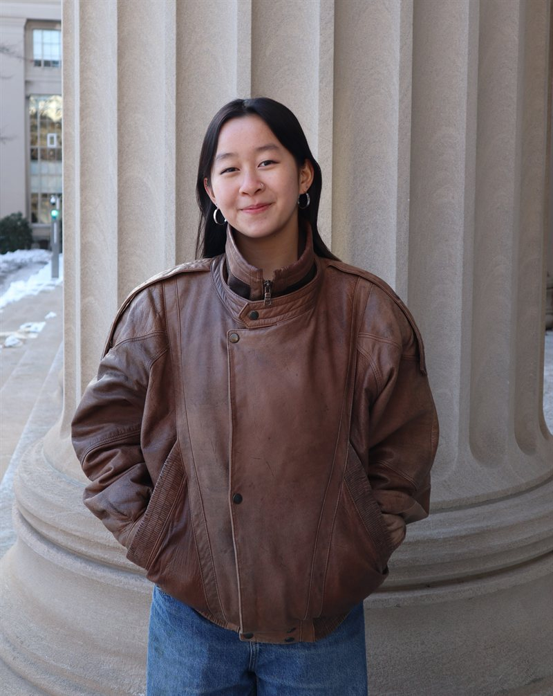

Gloria Zhu

I’m an engineer and designer who loves to build things. Currently, I’m a graduate student at MIT ('27),
researching human-AI interaction at the
Design Intelligence Lab.
I completed my undergrad at MIT in spring 2026 with a dual B.S. in Computer Science and Art & Design,
and a minor in Media Studies.
I am interested in beautiful design and rigorous engineering and their intersections. And, working with passionate, open-minded people!
Previously, I interned at Fathom Design, Databricks, Formlabs, and Zoox (Amazon Self-Driving), in software and design engineering roles. I am most interested in fast-paced roles combining technical, creative, and user-centered work - particularly creative technology, product design/management, and product/design engineering.